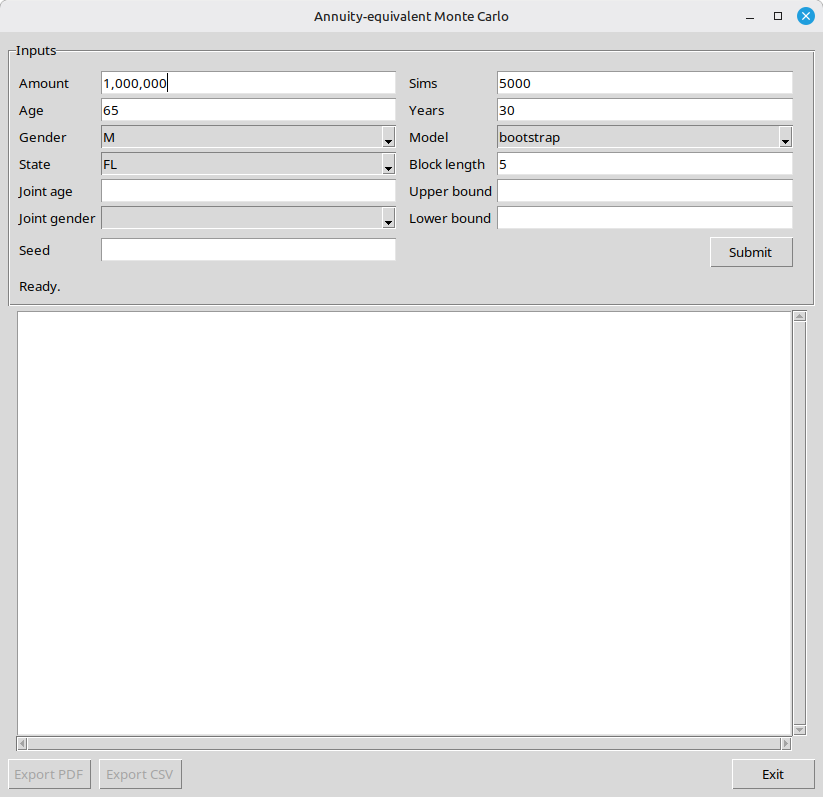

These programs are for educational purposes only and are not financial advice. Appropriate investment advice depends on individual circumstances and risk tolerance. The analyses performed by the programs in this repository do not contemplate any such individual circumstances. Equity investment can lose money. The projected cashflows from the investment strategies modeled here are speculative and are likely to differ significantly from actual experience going forward.
The scripts in this repository likely contain errors. There is ABSOLUTELY NO WARRANTY for the software in this repository; see the License for the full warranty disclaimer and limitation of liability.
This simulator models a retirement spending strategy that keeps money invested in equities and each year withdraws roughly what a life annuity would pay on the current balance. The Monte Carlo engine runs thousands of independent scenarios, each drawing random sequences of historical equity returns and inflation, and reports the resulting distribution of balances and annual withdrawals year-by-year.
This tool works best when the equity portfolio is one component of a broader retirement income strategy — not the sole source of income. The strategy is designed for people whose essential spending is already covered by reliable, inflation-adjusted sources such as Social Security, pensions, or a TIPS ladder. Because necessities are funded elsewhere, the amount withdrawn from the equity portfolio can be allowed to vary substantially from year to year without endangering the retiree's standard of living. In a bad year for stocks, the portfolio simply pays less; in a good year, it pays more.
The simulation shows the range of potential outcomes — how much the annual payout might vary, and how the balance might evolve — under thousands of different historical-return sequences. This can inform questions such as:
Note: This is not a model of buying an annuity. The money stays invested, so there is no mortality pooling and no income guarantee. A severe early sequence of poor returns can deplete the balance. The annuity payout is used only as a spending rule — a longevity-aware way to decide how much to take each year.
The installer sets up a Python virtual environment and creates a desktop shortcut that launches the graphical application with no command-line involvement. Run it once from the project folder you downloaded.
Double-click installers/install_macos.command in Finder (or run it from
Terminal). This creates ~/Applications/Annuity Monte Carlo.app. After
installation, launch the app from your Applications folder. If Gatekeeper
blocks it on first launch, right-click the app and choose Open.
To uninstall, double-click installers/uninstall_macos.command.
Double-click installers/install_windows.bat. It creates Start Menu and
Desktop shortcuts that launch the GUI without opening a console window. If
Python is not already installed, the installer downloads and installs the
official Python 3.14 package automatically.
To uninstall, run:
powershell -ExecutionPolicy Bypass -File installers\uninstall_windows.ps1
From a terminal in the project folder, run:
installers/install_linux.sh
This adds an "Annuity Monte Carlo" entry to your desktop applications menu
and places a shortcut on your Desktop. If Python is not already installed, the
script will use your package manager (apt, dnf, zypper, or pacman) and
prompt for your password. To uninstall, run installers/uninstall_linux.sh.
.venv/ inside the project folder.The installers are safe to re-run; the virtual environment and shortcuts are refreshed in place.

Launch the application from the desktop shortcut the installer created. The window has three sections: an Inputs panel at the top, a scrollable report area in the middle, and a row of action buttons at the bottom.
| Field | What to enter |
|---|---|
| Amount | Starting equity portfolio balance (e.g. 1,000,000). Commas are accepted. |
| Age | Your current age. Used to look up the annuity payout rate. |
| Gender | M or F. |
| State | Your U.S. state. Used only when Quotes is set to site; ignored otherwise. |
| Joint age | (Optional) Age of a spouse or partner. Leave blank for a single-life calculation. Defaults to 65 (a couple); a second life lowers the payout (last-survivor pricing). |
| Joint gender | (Optional) Gender of the second person (default F). Must be filled in if Joint age is given. |
| Field | What to enter |
|---|---|
| Sims | Number of Monte Carlo paths to run (default 5,000). More paths give smoother percentile estimates; 1,000–10,000 is a reasonable range. |
| Years | How many years to project (default 35 — long enough to provision for longevity, not just life expectancy). |
| Model | Which historical return sample to draw from: us, global (default), or postwar. See Simulating returns, inflation, and interest rates. |
| Block length | The number of consecutive historical years drawn together in the block bootstrap (default 5). Longer blocks preserve more multi-year (sequence) risk but sample fewer distinct blocks. |
| Seed | Optional integer. Setting a seed makes runs reproducible. Leave blank for a fresh random run each time. |
| Field | What to enter |
|---|---|
| Upper bound | (Optional, default 1.5) Maximum real spending as a multiple of the first year's withdrawal. For example, 1.5 limits every later year to at most 50% more than year 1 in today's dollars. This preserves capital when markets do very well — banking gains for later years and bequest rather than spending them all. |
| Lower bound | (Optional) Minimum real spending as a multiple of the first year's withdrawal. For example, 0.6 ensures that even in a bad market the withdrawal does not drop below 60% of year 1's level. |
| Field / control | What it does |
|---|---|
| Inflation | Assumed constant annual inflation rate, used to deflate results to today's dollars in constant mode. Default blank (treated as 0%); real outcomes are essentially invariant to it. Ignored when Dynamic inflation + rate is on. |
| Quotes | local (default, offline, instant) or site (live quotes from immediateannuities.com, requires internet). Local pricing uses published SOA actuarial tables and matches market quotes at roughly 4.5–5% interest. |
| Interest rate | The annuity discount rate. When Dynamic inflation + rate is off this is a fixed rate used throughout; when it is on this is the starting rate and the model evolves it each year. Default is 4.3% (approximately the 2026 10-year Treasury yield). |
| Dynamic inflation + rate | Simulate inflation and the discount rate year-by-year rather than holding them constant. Available only with the us sample (and Quotes = local) — the rate model is calibrated on US data; the global/postwar samples always use constant inflation. Off by default. |
| Scale G2 mortality improvement | Applies the SOA Projection Scale G2 mortality improvement factors, projecting longer lifespans forward from the 2012 base tables. This lowers the annual payout slightly, reflecting that people who are alive to collect an annuity tend to live longer than the general population average. Requires Quotes = local. |
Press Submit (or Tab to the Submit button and press Enter) to start the run. The simulation runs in the background so the window stays responsive. The status line shows progress; a typical 5,000-path run with local pricing finishes in a few seconds.
When the simulation finishes, a text report appears in the scrollable panel. It shows:
Calibration header — the parameters used: amount, age, gender, model, interest rate, inflation, and the first year's annuity payout rate.
Ending balance distribution — after the full projection period, the mean, median, and 80% / 90% / 95% / 99% central confidence intervals for the ending balance, expressed in both today's dollars (inflation-adjusted) and nominal dollars. A "C% interval" is the central range covering C% of outcomes (e.g. the 80% interval spans the 10th-to-90th percentile range of all simulated paths). The block also notes the fraction of paths that end below the starting amount in real terms, and below half of it.
Annual payout by year — for each projected year, the same confidence intervals for that year's annual withdrawal, in today's dollars. This lets you see how income might vary from year to year across the range of market scenarios.
Worst historical returns seen in the run — the worst single-year and worst cumulative five-year real equity total return that appeared anywhere in the simulation, drawn from historical data.
Balances are capped at zero: a path that depletes the portfolio holds at zero for its remaining years. The depletion rate is visible in the downside statistics.
Click Export PDF to save a figure-rich report. A file dialog lets you choose the file name and location; the PDF opens automatically after it is saved.
The report contains:
Summary cards (page 1, top) — two side-by-side cards summarizing the ending-balance distribution: one in today's dollars, one in nominal dollars. Each card shows the mean, median, and the 80/90/95/99% confidence intervals. A highlighted line calls out the downside statistics (fraction of paths that finish below the starting amount in real terms, and below half of it).
Balance fan chart (page 1, below the cards) — a year-by-year chart of the portfolio balance distribution in today's dollars. The median path runs through the center. Bands fan out above and below: green bands above the median (shaded more darkly the further they are from the median), red bands below it (darkening toward the worst outcomes), so the unfavorable region draws the eye. The y-axis uses a pseudo-log scale so paths that deplete to zero remain visible alongside the wide upper tail.
Median and stress scenarios — for each of four representative paths (median, 10th-percentile, 2.5th-percentile, and 0.5th-percentile ending balance), a dual-axis chart shows that path's market return, inflation, and annuity discount rate year by year, paired with the mean, minimum, and maximum annual withdrawal for that path and its ending balance.
Per-year summary table — a paginated table giving the balance percentiles and median annual withdrawal in today's dollars for each projected year.
Click Export CSV to save the numerical results as a spreadsheet-compatible file. The CSV contains the same per-year statistics shown in the report (balance percentiles and withdrawal amounts).
The Docs buttons (README, Methodology, Fit notes) open the bundled documentation in your system's default viewer at any time, independent of whether a simulation has been run.
Every simulated year requires a nominal equity return paired with an inflation
rate. The simulator always uses a circular block bootstrap — it draws
consecutive runs of block_length historical years and stitches them together,
which preserves serial correlation (multi-year inflation persistence and
equity momentum / mean-reversion) and so captures sequence-of-returns risk.
Equity and inflation are always drawn jointly (as matched historical pairs),
preserving their historical correlation.
What differs between the three Model choices is which history is sampled:
us
and global.The
globalandpostwarsamples are built from the JST Macrohistory Database (CC BY-NC-SA), which is not bundled with this repository — seedata/README.mdto fetch it. Without it, theussample still works.
Constant inflation (default): A single inflation assumption (default 2.5%) deflates all results to today's dollars, and a single discount rate prices the annuity payout each year. To keep equity returns consistent with the assumed inflation, each sampled year's nominal return is restated: the historical inflation embedded in it is stripped out and the assumed inflation re-applied, preserving the real return.
Dynamic inflation and rates (us sample only — check "Dynamic inflation +
rate"): Inflation varies year-to-year using each path's sampled rates, and the
annuity discount rate evolves each year according to an error-correction model
fit to 10-year Treasury yields and CPI from 1954–2025: the rate adjusts slowly
toward a long-run Fisher target driven by last year's inflation, with a fitted
adjustment speed of about one-sixth of the gap per year. This reproduces the
sluggish pass-through observed historically, including the negative real yields
of 2020–2022. Because that rate model is calibrated on US data, dynamic mode
is available only with the us sample (and Quotes = local); the global and
postwar samples always use constant inflation. All results are deflated to
today's dollars.
For a cautious, internationally-grounded assessment of long-run risk:
global (or postwar) — these are the defaults' intent: don't
bet the plan on the US repeating its historically exceptional run.local (offline and instant).To explore the US-specific dynamic inflation/rate model instead, switch Model
to us and check Dynamic inflation + rate.
Full technical details — model specification, OLS estimates, fit diagnostics, and references — are in METHODOLOGY.pdf (accessible from the Docs button in the GUI).
The GUI wraps the Python scripts, which can also be run directly from a
terminal. All scripts accept --help for a full list of options.
montecarlo.py — many-path simulation# default 5000-path run, global developed-market sample (local pricing, offline)
.venv/bin/python montecarlo.py 1000000 65 M FL
# US sample with dynamic inflation + interest rate (US-only feature)
.venv/bin/python montecarlo.py 1000000 65 M FL --model us --dynamic-rates
# post-WWII global sample, joint life, capital-preserving upper bound
.venv/bin/python montecarlo.py 1000000 65 M FL --model postwar \
--joint-age 65 --joint-gender F \
--upper-bound 1.5 --lower-bound 0.6
# save a PDF report directly
.venv/bin/python montecarlo.py 1000000 65 M FL
# -> type PDF at the prompt
withdrawal_projection.py — single random path# reproducible single path
.venv/bin/python withdrawal_projection.py 1000000 65 M FL --seed 1
# US sample with dynamic rates
.venv/bin/python withdrawal_projection.py 1000000 65 M FL \
--model us --dynamic-rates
annuity_pricing.py — standalone annuity calculator# single-life, $100k, age 65 male
.venv/bin/python annuity_pricing.py 100000 65 M
# joint life, 65M & 63F, at 4% with Scale G2 improvement
.venv/bin/python annuity_pricing.py 100000 65 M \
--joint-age 63 --joint-gender F --interest 0.04 --improvement
# compare local model to live immediateannuities.com quotes
.venv/bin/python annuity_pricing.py --compare
Man pages (viewable without installing) are included for the three main scripts:
man ./montecarlo.1
man ./withdrawal_projection.1
man ./annuity_pricing.1
Licensed under the Mozilla Public License 2.0. The software is provided "as is", without warranty of any kind — see Sections 6 ("Disclaimer of Warranty") and 7 ("Limitation of Liability") of the license.